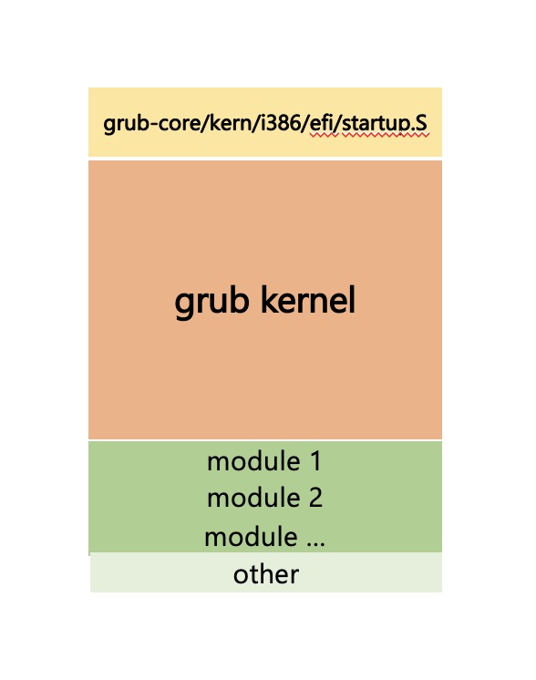
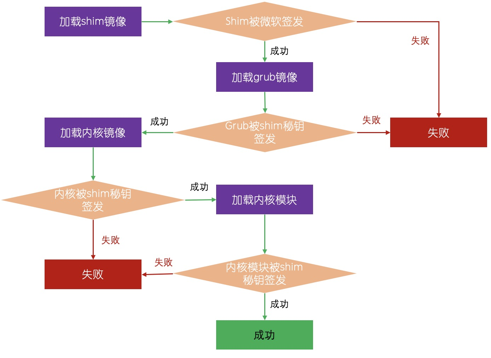

上个章节我们介绍了grub在bios固件下启动的详细过程，本章我们将介绍在UEFI固件下启动的过程，在UEFI固件启动的过程没有bios下的那么复杂，由于UEFI固件识别EFI系统分区的efi程序，所以我们只需要得到一个efi程序即可，在《Grub2那些事 - 制作一个使用UEFI的系统》章节中我们介绍grub的uefi版本制作做成。
GRUB是如何启动的
在UEFI固件下，grub的启动非常简单

我们可以看到在uefi下，startup.S 作为启动点，后面就是grub的内核，efi文件是PE格式的文件，UEFI识别PE格式的文件并且加载到内存中执行，所以这里我们不需要建立复杂的执行环境，这个工作全部交给了uefi固件。我们只负责编写efi应用即可。
需要注意的是在efi模式下，grub会填充启动参数中关于efi的一些信息。其他的一些信息和bios中基本一致。
安全模式启动
UEFI定义了安全启动的规范，UEFI通过使用安全启动可以规避非法第三方的应用侵害系统。安全启动使用了当前使用最为广泛的X509证书。它通常可分为两个部分，一个是更新证书库，一个是验证应用是否授信。
在真实的计算机中通常UEFI固件通常保存了一些信任证书，最为广泛的是微软的证书。UEFI加载efi程序的时候回通过这些证书验证程序是否授信，所以UEFI安全启动最为重要的是其几个证书概念
-
DB（signature database）：用以保存授信的证书库，经过这个证书库签发的证书被UEFI固件所信任
-
DBX（forbidden signature database/signature database blacklist'）：类似黑名单，保存非授信证书库。被非授信证书库签发的证书将被UEFI固件阻止。
-
KEK（key exchange keys database）：这个证书库的证书用于保护DB，DBX的更新
-
PK（platform key）：用以保护KEK，只有通过PK才能更新KEK。
它们之间的关系可以用以下这张图展现。
所以对于硬件厂商和系统开发商而言，它们通常保存了不同的key
-
对于硬件厂商保存了PK秘钥
-
对于系统开发商而言，它通常保存了KEK和DB秘钥。
这个规则不是绝对的，硬件开发商也可以有自己的KEK和DB秘钥。所以在真实的系统中
-
硬件厂商拥有了PK的秘钥
-
KEK中保存了'Microsoft Corporation KEK CA'
-
DB中保存了'Microsoft Windows Production PCA'和'Microsoft Corporation UEFI CA'证书
下面是一个UEFI固件使用db和dbx安全启动的流程图
在微软的Windows中都是通过windows的秘钥签发，而对于linux则是另外一种场景。在UEFI中还有一个机制DBT和DBR，我们通常都用不到这里就不介绍了。
Linux的安全启动
为了提供更加灵活和摆脱对微软的依赖，Linux建立了自己的一套秘钥体系。在这套体系中，只需要shim经过微软秘钥的签发。

在这张图中
-
shim需要被'Microsoft Corporation UEFI CA'验证
-
shim后续加载的镜像就和微软的体系告别了建立了自己的一套体系
在《Grub2那些事 - 制作一个可同时支持BIOS和UEFI安全启动的系统》文中，我们介绍了这个过程我们建立了自己的PK，DB，KEK和SHIM秘钥，grub和内核以及内核模块都要被shim秘钥签发，这样linux才能顺利的引导。
shim的秘钥通过 mmx64.efi（MokManager） 程序所管理，启动后可以使用 mokutil 管理。